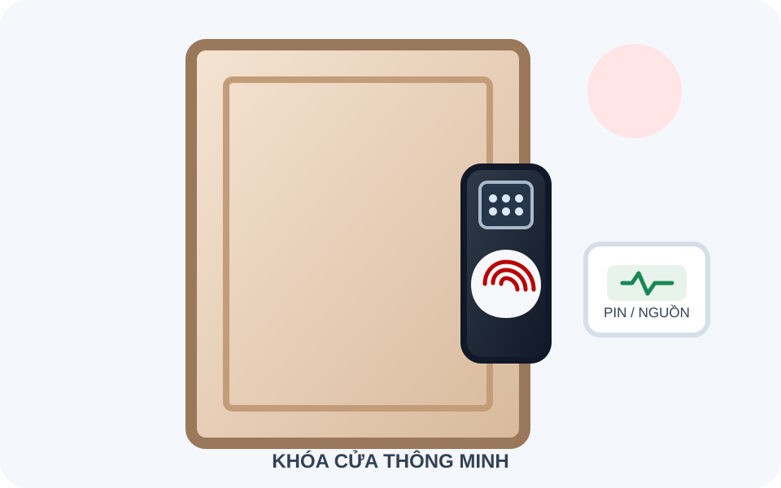

Khóa cửa thông minh hết pin, không nhận vân tay: kiểm tra thế nào?

Khóa cửa thông minh có thể không nhận vân tay, bàn phím không sáng hoặc phát cảnh báo khi pin yếu hay cảm biến gặp vấn đề. Trước khi thao tác, hãy xác định đúng mẫu khóa và xem hướng dẫn sử dụng của nhà sản xuất. Không cố cạy cửa hoặc tháo thân khóa khi chưa rõ cấu tạo.
1. Khi khóa báo pin yếu hoặc bàn phím không sáng
Quan sát đèn báo, âm báo và màn hình (nếu có). Nếu tài liệu của hãng hướng dẫn người dùng tự thay pin, hãy dùng đúng loại pin và lắp đúng cực. Kiểm tra khoang pin chỉ khi đó là bộ phận được thiết kế để người dùng mở; không tự đấu dây hoặc chập tiếp điểm.
2. Khi khóa không nhận vân tay
- Lau nhẹ bề mặt cảm biến bằng khăn mềm, khô và sạch.
- Đảm bảo ngón tay và cảm biến không bị ướt, bám bụi hoặc dính dầu.
- Thử lại theo đúng tư thế đặt ngón tay trong hướng dẫn sử dụng.
- Nếu có phương thức mở dự phòng đã đăng ký, sử dụng theo tài liệu của hãng.
Nếu cảm biến liên tục báo lỗi, không nên tự xóa dữ liệu người dùng, khôi phục cài đặt gốc hoặc thử thao tác quản trị khi chưa hiểu rõ hậu quả.
3. Khi bàn phím hoặc ứng dụng điện thoại không phản hồi
Kiểm tra trạng thái pin, kết nối mạng hoặc Bluetooth theo tài liệu của thiết bị. Một số mẫu khóa vẫn có thể vận hành tại cửa ngay cả khi ứng dụng mất kết nối; hãy phân biệt lỗi kết nối ứng dụng với lỗi cơ cấu khóa. Không chia sẻ mã mở cửa, mật khẩu quản trị hay mã dùng một lần cho người không đáng tin cậy.
4. Chuẩn bị gì trước khi gọi hỗ trợ?
- Hãng và mã mẫu khóa nếu biết.
- Dấu hiệu cụ thể: không sáng bàn phím, báo pin yếu, không nhận vân tay hay không kết nối ứng dụng.
- Thời điểm sự cố bắt đầu và việc gần đây có thay pin hoặc thay đổi cài đặt hay không.
- Loại cửa và vị trí lắp khóa.
Không gửi mã số, mật khẩu quản trị hoặc ảnh để lộ thông tin truy cập. Chỉ yêu cầu hỗ trợ với cửa thuộc quyền sở hữu hoặc sử dụng hợp pháp của bạn.
Khi nào nên gọi thợ?
Nếu đã làm theo hướng dẫn của nhà sản xuất mà khóa vẫn không hoạt động, có tiếng kêu bất thường, tay nắm bị kẹt hoặc thiết bị nóng bất thường, hãy dừng thao tác và nhờ người có chuyên môn kiểm tra. Trước khi thực hiện, cần trao đổi rõ phương án, chi phí dự kiến và xác nhận thời gian hỗ trợ.
Câu hỏi thường gặp
Khóa thông minh hết pin có tự thay pin được không?
Chỉ thay pin theo hướng dẫn của nhà sản xuất và khi khoang pin được thiết kế để người dùng thao tác. Dùng đúng loại pin, đúng cực; không tự đấu nguồn hoặc chập tiếp điểm.
Vì sao khóa không nhận vân tay dù cảm biến vẫn sáng?
Có thể do cảm biến bẩn, ngón tay ướt hoặc cảm biến gặp lỗi. Lau nhẹ bằng khăn mềm khô và làm theo hướng dẫn của mẫu khóa; nếu vẫn lỗi, dừng thử liên tục.
Có nên khôi phục cài đặt gốc khi khóa bị lỗi?
Không nên tự khôi phục nếu chưa hiểu rõ quy trình và hậu quả, vì thao tác này có thể xóa dữ liệu người dùng hoặc cài đặt truy cập. Hãy liên hệ người quản lý hoặc kỹ thuật viên được ủy quyền.
Tư vấn khóa cửa thông minh tại Cẩm Phả
THỢ KHÓA LƯU ĐỘNG tiếp nhận trao đổi về lắp đặt và sự cố khóa cửa thông minh tại Cẩm Phả cùng các khu vực lân cận tùy địa điểm, lịch làm việc. Gọi trước để xác nhận khả năng hỗ trợ tại địa chỉ cụ thể.
Xem thêm dịch vụ lắp đặt khóa cửa thông minh, bài viết về khóa thông minh cho cửa nhôm kính tại Cẩm Phả và khóa thông minh cho cửa trượt tại Vân Đồn.